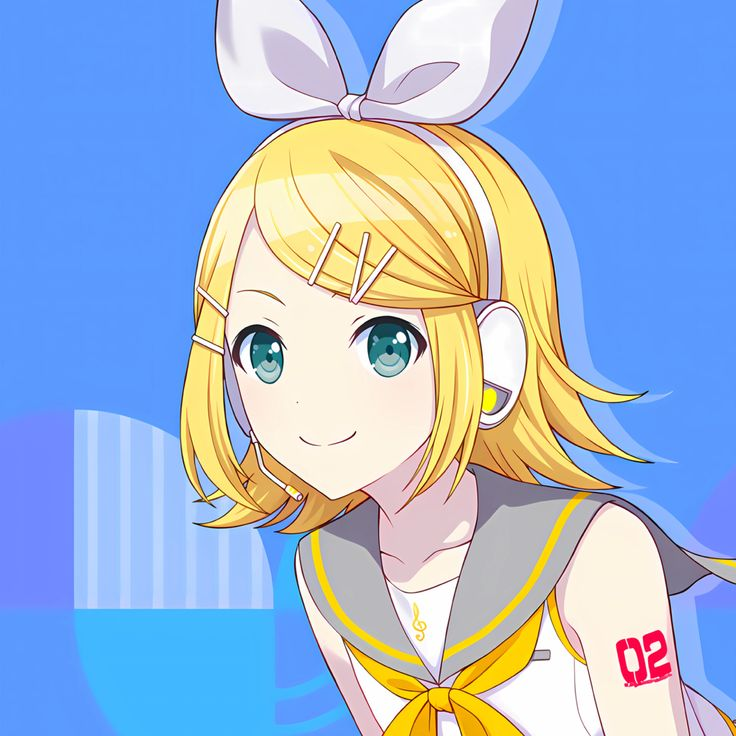

Kagamine Rin - CV02
Kagamine Rin (鏡音リン) adalah salah satu karakter VOCALOID yang dikembangkan oleh Crypton Future Media dan dirilis pada 27 Desember 2007 bersama dengan Kagamine Len sebagai pasangan kembar atau cermin. Suaranya diisi oleh pengisi suara Jepang, Asami Shimoda, dan ia menggunakan mesin VOCALOID2. Rin digambarkan sebagai gadis enerjik dan ceria dengan rambut pirang pendek, pita putih besar di kepalanya, serta pakaian futuristik bergaya pop. Ia dikenal memiliki suara yang kuat, nyaring, dan ekspresif, cocok untuk genre musik rock, pop, hingga lagu-lagu yang emosional. Dalam banyak lagu, Rin sering tampil berpasangan dengan Len, baik sebagai saudara kembar, pasangan duet, atau bahkan alter ego, tergantung konsep lagunya.
Lagu-lagu populernya antara lain “Meltdown”, “Kokoro”, “Daughter of Evil”, dan “Tokyo Teddy Bear”, yang menunjukkan fleksibilitas karakter dan vokalnya dalam berbagai tema dan emosi. Rin telah menjadi salah satu ikon penting dalam komunitas VOCALOID, disukai karena kepribadiannya yang penuh semangat dan warna suaranya yang khas.
